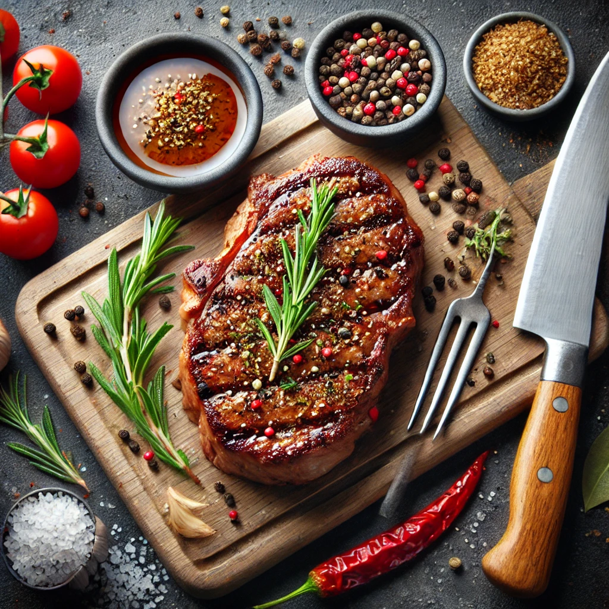

Steak Rezept
Zutaten
- 2 Rindersteaks (je ca. 250 g)
- Salz
- Pfeffer
- 2 EL Olivenöl
- 2 Knoblauchzehen, zerdrückt
- 2 Zweige Rosmarin
- 2 Zweige Thymian
- 2 EL Butter
Zubereitung
- Vorbereitung: Steaks ca. 30 Minuten vor dem Braten aus dem Kühlschrank nehmen und Raumtemperatur annehmen lassen.
- Würzen: Steaks beidseitig großzügig mit Salz und Pfeffer würzen.
- Anbraten: Olivenöl in einer Pfanne bei hoher Hitze erhitzen. Steaks in die Pfanne geben und jede Seite 2-3 Minuten scharf anbraten, bis sie eine goldbraune Kruste haben.
- Aromatisieren: Knoblauch, Rosmarin und Thymian in die Pfanne geben. Butter hinzufügen und schmelzen lassen.
- Übergießen: Steaks mit der geschmolzenen Butter und den Kräutern übergießen, um zusätzlichen Geschmack zu verleihen.
- Ruhezeit: Steaks aus der Pfanne nehmen und 5 Minuten ruhen lassen, damit sich die Säfte verteilen.
- Servieren: Steaks in Scheiben schneiden und mit Beilagen nach Wahl servieren.
Tipps
- Für ein medium-rare Steak sollte die Kerntemperatur ca. 54-57°C betragen.
- Verwende ein Fleischthermometer, um die gewünschte Garstufe genau zu erreichen.